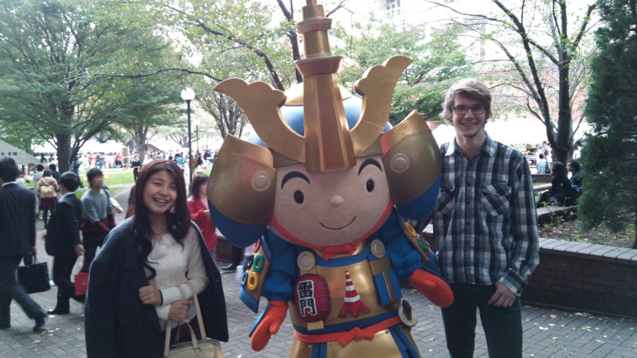
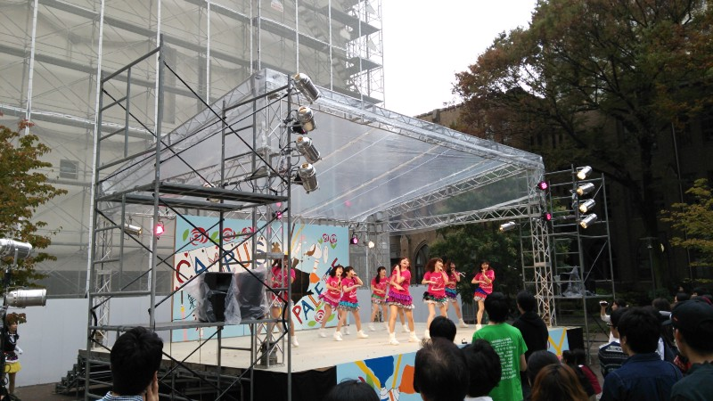
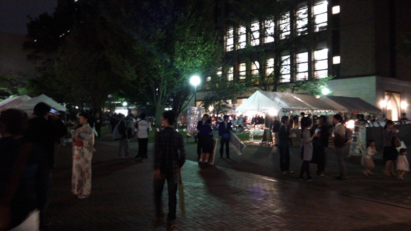

Daigakusai
Otherwise known as a university festival
Daigakusai
Delayed as usual, this is the “interesting event” that I talked about in my last post. It’s a tradition I was quite surprised by, although I’d be interested to know whether it exists in America or any other Western countries …
I’m talking about Gakushuin’s university festival: a time to eat food, watch performances and generally see what university students are like in holiday mode. The festival took over the campus on the first Saturday, Sunday and Monday of November, with Friday and Tuesday reserved for setting up and packing down. This meant students without any festival activities to do got a five-day holiday, but needless to say, I was not one of those people.
The university festival is a time for circles to set up stalls and sell food to raise funds for the next year’s activities. It’s also a chance for bukatsu members to do more serious activities, while looking condescendingly at the circle members and pointing out to each other how their club would never stoop so low.
The Aikido club’s serious activity was to hold an enbukai (martial arts demonstration) on the Saturday. First-years don’t get to do anything particularly interesting, but it was still fun (and a bit nerve-wracking) to perform some simple moves in front of our school’s shihan (grandmaster), teachers, coaches and various past graduates. Clubs from other universities were also invited to give demonstrations, so it was interesting to see their various styles. In the evening we had a formal dinner with the teachers and older graduates followed by an informal party with the younger graduates. Since the first and second-year students have to set up and pack up everything, we were busy for most of the day (and some of Friday and Tuesday as well).
However, I managed to go and wander around the festival with Jackie on Sunday. Japanese “festivals” all seem to follow one basic pattern: food stalls lining every path with people packed in between. There’s also a standard set of festival food you can expect to find, including grilled meat/chicken/squid, candyfloss, buttered potatoes, seaweed jelly and various cream-filled sweets. I was expecting to find that set at the university festival as well, but I was pleasantly surprised by some of the creative snacks on sale. Pancake-on-a-stick, anyone? Or perhaps you’d like fried bread and ice cream? Or an Earl Grey tea scone? If you prefer something traditional, how about doing the tea ceremony in a room decorated to look like a traditional village, with green tea and Japanese sweets made by students?
I can’t remember why this guy was there, but he’s a samurai with Tokyo Tower on his armour and the Skytree on his helmet — he’d be awesome anywhere
Aside from the food, various clubs and circles do public performances. There seem to be an endless number of dance circles from all sorts of genres at Gakushuin — you could spend almost the entire three days going around and watching different dances. I didn’t. I watched two dance performances, mainly because I had friends in both groups. One was a Japanese idol cover group: great dancers and catchy songs, but the frilly outfits and cutesy attitude would make feminists cry! The other was some sort of modern hip-hop thing (probably not actually, but I know virtually nothing about dance styles), which was also fun. Naturally there were many other things we didn’t have time to see, including comedy performances, plays and other martial arts demonstrations.
I have no idea what the song was, but apparently in Japan it’s quite famous
This is actually a shorter article than I expected; I guess the main message is “you had to be there”. October and November are definitely the season for university festivals though, so I’d definitely recommend going to a couple if you happen to be in Japan then. I enjoy the traditional feel of religious festivals, but it’s equally fun to see something where people are simply showing off and having a good time!
I really meant to take more photos during the daytime …
Instead of weird lifestyle things this week, I’m going to introduce you to one infuriating aspect of the Japanese language: Homophones.
For those who don’t know, Japanese has 5 vowel sounds which are used to make 52 basic syllables (usually a consonant plus a vowel, such as ‘ka’, ‘te’ or ‘bo’). There are some compound sounds, but it’s still a lot more limited than English with its vast array of inconsistent pronunciation. This means that a lot of words end up being the same as each other. Sometimes there’s an almost imperceptible difference in intonation (like Chinese) to let you know which word is meant, but there are many cases where the intonation is the same as well. This means that in order to be sure which word is being used, you need to see it written down in symbolic characters rather than just phonetically.
There have been several times recently when people have used words in conversation which I thought I recognised but which seemed to make no sense in the context (or, worse, did seem to make sense, meaning I completely misunderstood the sentence). Naturally I can’t think of any particular cases at the moment, but I’ll give you a few examples of homophones which might cause confusion.
- kaki (かき; oyster) vs kaki (柿; persimmon) vs kaki (垣; fence)
- tako (タコ; octopus) vs tako (凧; kite)
- shifuku (私服; mufti/plain clothes) vs shifuku (至福; supreme bliss)
- kougai (郊外; suburb) vs kougai (公害; pollution)
- kagaku (科学; all sciences) vs kagaku (化学; chemistry)
Anyway, I’m sure in the future I’ll laugh at how hard this seemed, but right now it’s quickly becoming the most irritating part of Japanese.
Finally, talking about pronunciation has made me think of an excellent poem I discovered today which perfectly highlights how inconsistent and confusing English pronunciation is. The full text is available at http://ncf.idallen.com/english.html but I’ve put a few of my favourite snippets below.
…
…
That’s all for now — I have two months left here so let’s see how much blog-worthy stuff I can do before I leave!